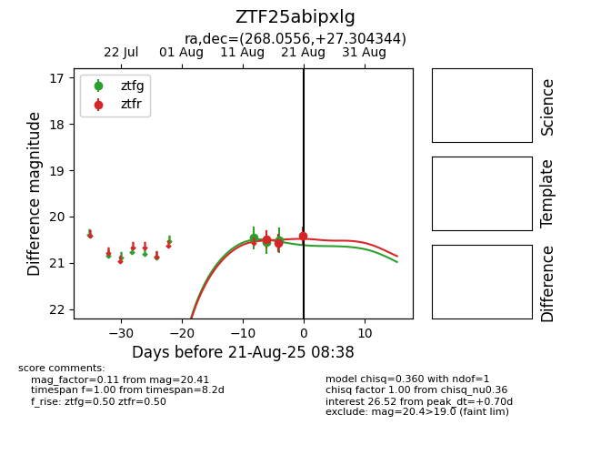

Target ZTF25abipxlg at 2025-08-21 08:38, see:
FINK: fink-portal.org/ZTF25abipxlg
Lasair: lasair-ztf.lsst.ac.uk/objects/ZTF25abipxlg
ALeRCE: alerce.online/object/ZTF25abipxlg
alt names
ZTF25abipxlg (ztf,alerce)
coordinates:
equatorial (ra, dec) = (268.0556,+27.30434)
galactic (l, b) = (52.4619,+24.28233)
photometry
last ztfg=20.51, ztfr=20.41
3 ztfg, 3 ztfr detections
